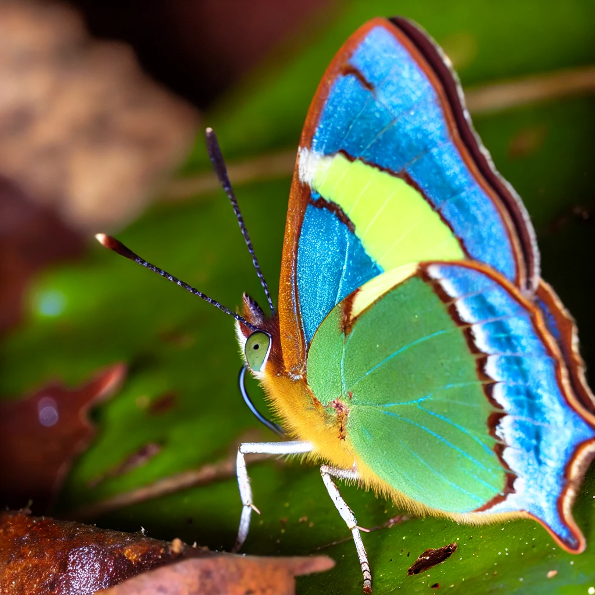
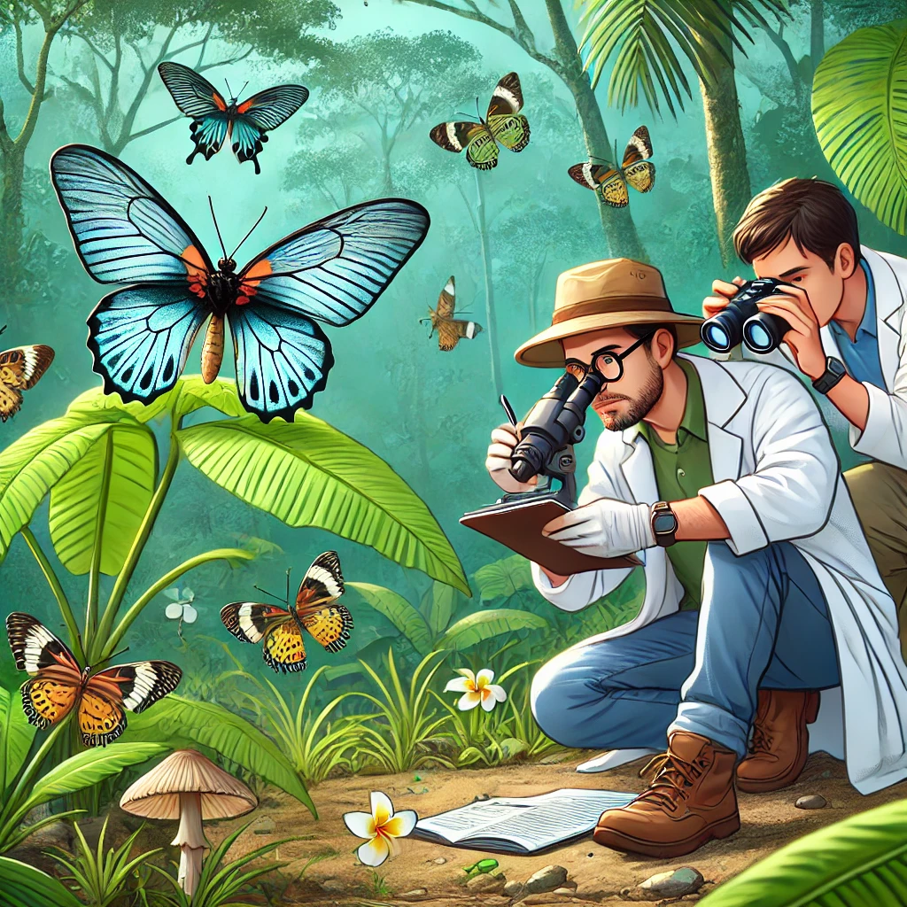
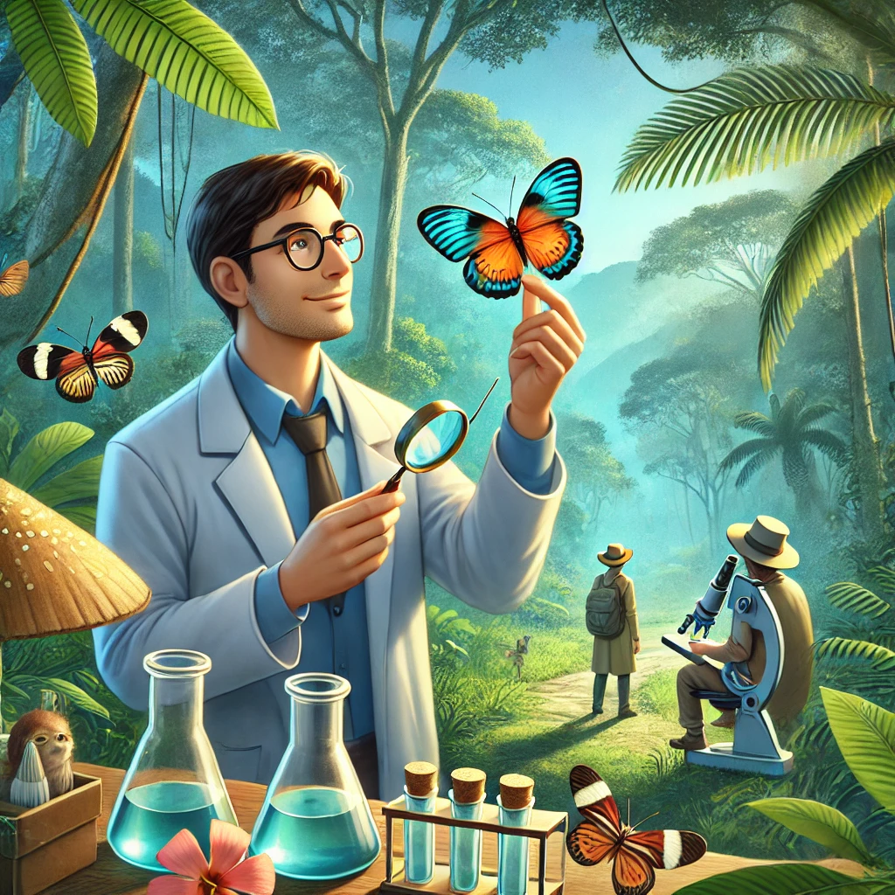

Scoperta di una Nuova Specie di Farfalla
Gli scienziati hanno scoperto una nuova specie di farfalla nelle foreste del Sud Italia. Questa scoperta rappresenta un importante contributo alla biodiversità della regione.
Caratteristiche della Nuova Specie
La nuova specie si distingue per i suoi colori vivaci e le ali traslucide. Gli esperti ritengono che queste caratteristiche aiutino la farfalla a mimetizzarsi nel suo habitat naturale, offrendo al contempo una difesa contro i predatori.
Importanza della Scoperta
La scoperta di questa nuova specie sottolinea l'importanza di proteggere gli habitat naturali e di continuare la ricerca sulla biodiversità. Gli scienziati stanno ora lavorando per capire meglio il comportamento e l'ecologia di questa farfalla unica.
Questa scoperta potrebbe portare a nuove iniziative di conservazione e sensibilizzazione sulla necessità di preservare la fauna selvatica della regione.